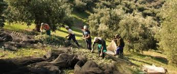

Hi all, Here you will find all my weekly projects in fabacademy 2015
My final project will serve in agriculture, it is a fabrication of tool to harvest olives from olive trees,
it works very similarly to hand harvesting.
olives can fall from trees only by shaking branches so the tool should be attached to the branch and create the necessary motion that help falling olives
without damage or injure.
some olive trees are higher that others and branches are different in size, so it should be attached to any branch size and reach fare ones as well,
it may be mountable to be easier to handle by users.
I want to create the simplest one I hope this will be convenient and help in the process. below some images of the traditional work
